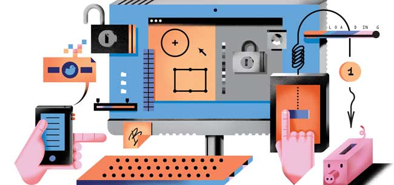

Interactive Interface Design
Overview
User interface design (UI) or user interface engineering is the design of user interfaces for machines and software, such as computers, home appliances, mobile devices, and other electronic devices, with the focus on maximizing usability and the user experience.(Source)
This subject is a more advanced continuation of Interaction Design. It covers User Interface and User experience design principles in more detail and you learn how to design and prototype and evaluate web applications. You gain more experience with Photoshop and Illustrator and will learn how to use Axure, a powerful and popular prototyping tool used in industry.
Continuous Assessment
This module is 100% assignment based with 30% usually going for the first assignment, a designed CV and portfolio and a design, prototype and evaluation assignment worth 70%.
Links to blogs/websites
We were required to complete a blog for this subject and to create a portfolio and CV. To see any of the material I made for this project you can check out my portfolio and my classmates portfolio for examples of work completed for this course.
Insiders Hints and Tips
My advice here is to spend a great deal of time designing and making your CV and Portfolio as it will be used to display your skills so far when you begin looking for work placement!